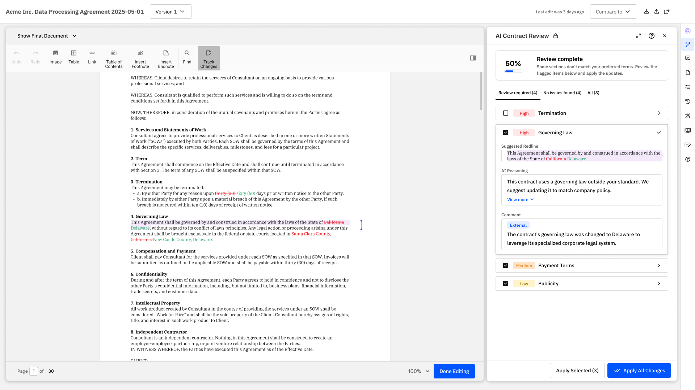
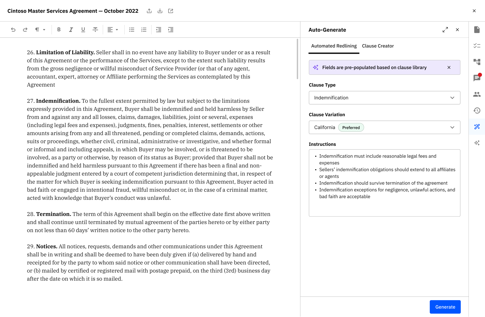
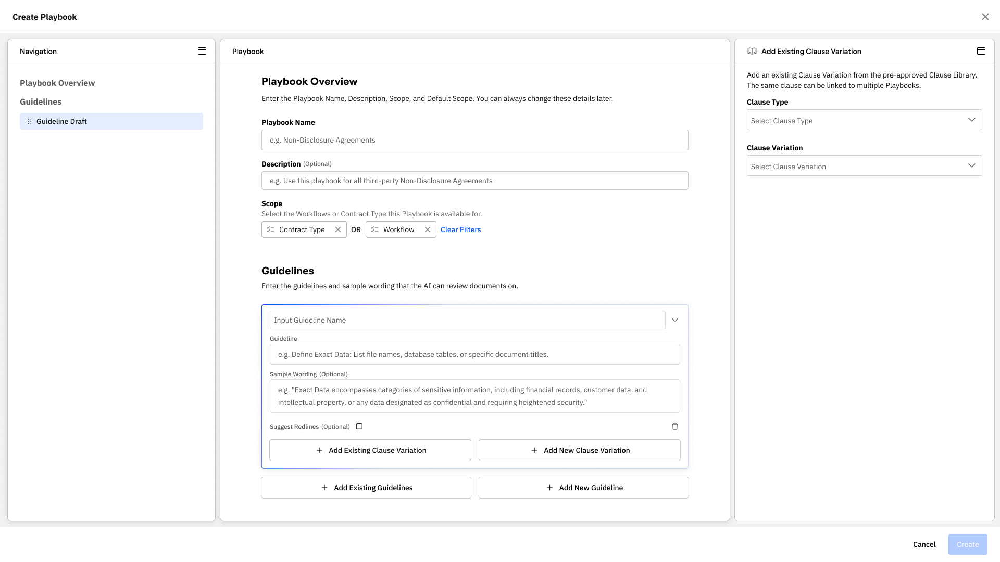
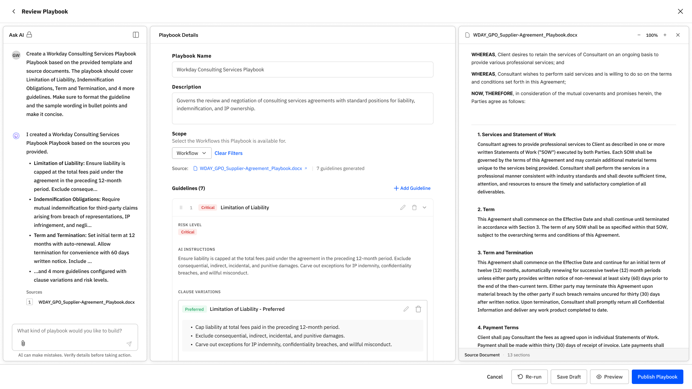
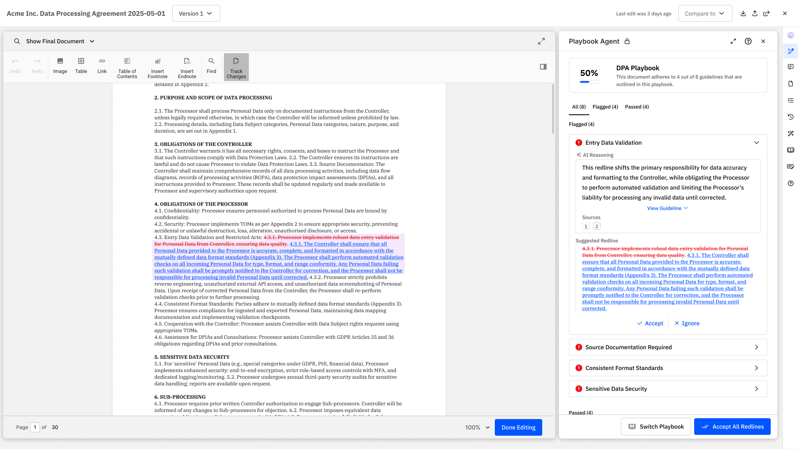
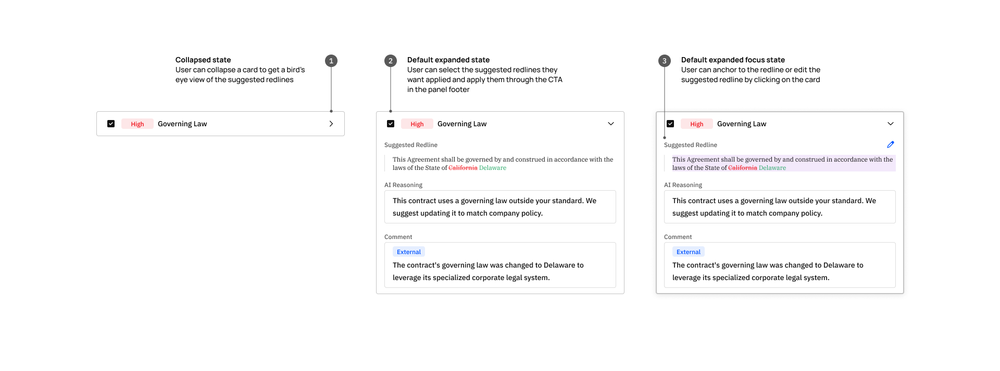
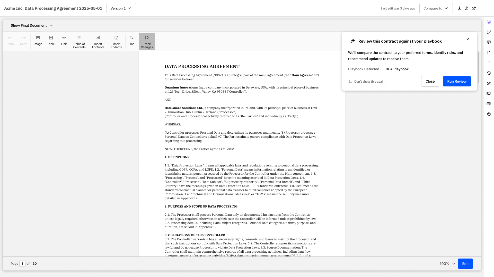

Contract Negotiation Agent
Designing a trustworthy AI contract review workflow for enterprise legal teams

Playbook-backed review combined redlines, risk signals, and rationale in one workspace.
Contract Negotiation Agent helped legal teams review third-party contracts against company policy inside the editor.
The product had to justify a premium cost per review in a workflow where low-confidence edits could slow negotiation or create legal risk.
The design problem was to make AI review configurable, explainable, and fast enough to use on live contracts.
Scope
End-to-end product design across setup, review, and feedback
Team
3 engineering squads, 2 PMs, legal stakeholders, and data science
Timeline
6 months from concept to launch-ready experience
Outcome
A review workflow structured for trust, policy control, and rollout
Problem
Legal teams were interested in AI review, but the product only worked if results were easy to verify and worth paying for on real contracts.
$50
Cost per review
Every run needed to feel materially better than manual clause-by-clause review.
3
Sources of policy logic
Review rules lived across playbooks, clause libraries, and legal judgment.
1
Critical trust gap
Users needed to understand why a clause was flagged before accepting edits.
Pain Point
Users had to ask AI for redlines clause by clause
The earlier flow treated AI review like a series of manual requests. It was slow, repetitive, and hard to trust across a full agreement.

Users had to request edits one clause at a time.
Key Design Decisions
- Problem: setup was manual, opaque, and could take up to 48 hours.
- Options: keep setup internal, expose raw prompting, or build structured authoring in product.
- Final decision: an AI-assisted playbook builder with reusable guidelines, clause variations, and templates.
- Why: reduced setup from days to minutes and made policy logic more consistent and scalable.
Before

Manual setup required slow input and handoff.
After

Structured playbook authoring cut setup time and improved consistency.
- Problem: earlier review surfaced issues, but users still had to interpret too much on their own.
- Options: one-shot recommendations, document summaries, or clause-level reasoning with explicit actions.
- Final decision: clause-level findings with severity, rationale, suggested redlines, comments, and clear apply / ignore actions.
- Why: made review faster to scan, easier to verify, and safer to edit before applying changes.
Before

Findings were visible, but risk and actionability were still unclear.
After
Review combined reasoning, redlines, comments, and explicit actions in one surface.
Interaction Deep Dive
Deep Dive
Interaction states balanced scanning, verification, and editing
The component supported quick triage first, then detailed review when confidence or nuance mattered.

State changes kept review and editing in one interaction model.
How the System Works
System Diagram
Input, configuration, AI processing, output, and feedback formed one product loop
The framework made clear how policy input shaped AI behavior, how results were delivered, and how user feedback improved the workflow over time.

The framework connected configuration, AI review, output, and feedback.
Selected Screens
Solution 1
Automatic ingress matched the document to the right review flow
The review started with the correct playbook instead of forcing users to configure the workflow from scratch.

The product detected the right playbook before review began.
Solution 2
Review results combined rationale, redlines, and collaboration
Users could inspect why a clause was flagged, edit the recommendation, or accept changes without losing document context.
Review results were structured for verification before action.
Impact
6 mo
from concept alignment to launch-ready workflow
Adoption readiness
Replaced a setup model that could take up to 48 hours with a guided in-product configuration flow.
5+
strategic account rollout conversations supported
Business signal
Used in rollout conversations with accounts including Netflix, Anthropic, Coinbase, LinkedIn, and AON.
3
engineering squads aligned around one product model
Operating leverage
Gave platform, UI, and data science teams one shared flow for setup, review, and feedback.
Stakeholder Feedback
“The internal and external playbook comments made it click instantly. It was exactly the direction we wanted.”
“It was the strongest concept I had seen since XRAY. The end-user experience felt exceptional.”